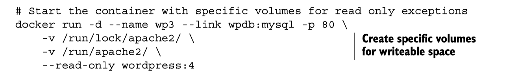
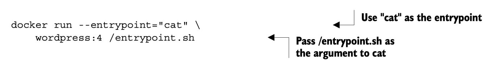
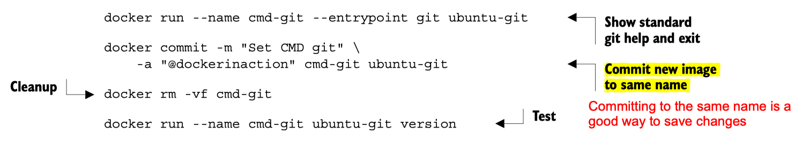

Docker
Notes from the book Docker In Action
Chapter 1
- Docker containers are faster than VMs to start, partly because they do NOT offer any hardware virtualization.
- VMs provide hardware abstractions so you can run operating systems.
- Docker uses Linux
namespacesandcgropus- Hamel: I don’t know what this is
Chapter 2
Getting help:
docker help cpdocker help run
Linking containers:
docker run --link- this is apparently deprecated per the docs
- Opens a secure tunnel between two containers automatically
- Also exposes environment variables and other things (see the docs)
docker cpcopy files from a container to local filesystemDetach an interactive container:
- Hold down
Controland pressPthenQ
- Hold down
Get logs
docker logs <container name>- Hamel: This is like
kubectl logs
- Hamel: This is like
Run a new command in a running container
docker execdocker exec <container_name> pswill run thepscommand and emit that to stdout
Rename a container with
docker rename <current_name> <new_name>docker execrun additional processes in an already running containerdocker createis the same asdocker runexcept that the container is created in a stopped state.docker run --read-onlyallows you to run a container in a read only state, which you only need to do in special circumstances (you probably never need to use this). You can make exceptions to the read only constraint with the-vflag:

- Override the entrypoint using the
--entrypointflag (this is discussed in part 2 of the book).

Injecting environment variables
With the --env or -e flags.
A nice trick to see all the environment variables in a docker container is to use the Unix command env

Setting multiple environment variables: use \ for multiline like this:
docker create \
--env WORDPRESS_DB_HOST=<my database hostname> \
--env WORDPRESS_DB_USER=site_admin \
--env WORDPRESS_DB_PASSWORD=MeowMix42 \
wordpress:4Automatically restarting containers
Docker uses an exponential backoff strategy - double the previous time waiting until restarting.
docker run -d --restart always ...
- no
- on-failure[:max-retries]
- always
- unless-stopped
Removing containers vs. images
Containers are the actual instantiation of an image, just like how an object is an instantion of an instance of a class.
docker rm: remove a container docker rmi: remove an image
Chapter 3
- Two ways to publish an image
- Build locally, push image to registry
- Make a
Dockerfileand use DockerHub’s build system. This is preferred and considered to be safer, and DockerHub will mark your image as trusted if you do this because it is the only way to provide transparency to what is in your image.
- Search dockerhub by keyword , sorted descending by stars
docker search <keyword>- example:
docker search postgres
- Using Alternative registries
docker pull quay.io/dockerinaction/ch3_hello_registry:latest
Images as files
You can transport, save and load images as files! (You don’t have to push them to a registry).

You can then load the image:
docker load -i myfile.tar
Chapter 5 Single Host Networking
- Terminology:
- protocols: tcp, http
- interfaces: IP addresses
- ports: you know what this means
- Customary ports:
- HTTP: 80
- MySQL: 3306
- Memcached: 11211
- Customary ports:
Discuss advanced networking and creating a network using the docker network command. Hamel: I don’t see an immediate use for this.
- Special container networks:
hostdocker run --network hostallows you to pretend like the host is your local machine, and you can expose any port and that will bind to the host.
nonedocker run --network nonecloses all connection to the outside world. This is useful for security.
exposing ports
-p 8080 This binds port 8080 to a random port on the host! you can find the port that the container is bound to by docker port <image name> example: docker run -p 8080 --name listener alpine docker port listener
This will give you output that looks like container --> host (which is reverse the other nomenclature of host:container
-p 8080:8080 this binds the container’s port to the host’s port 8080
-p 0.0.0.0:8080:8080/tcp same as above but specifies the interface and the tcp protocol.
Syntax is -p <host-interface>:<host-port>:<target-port>/<protocol>
Chapter 6 Isolation
Limit resources: Memory, CPU,
-mor--memory- number, where unit = b, k, m or g
- memory limits are not reservations, just caps
--cpu-shares- is a weight you set that is used to calculate % of CPU usage allowed
- % is calculated as weight / (sum of all weights)
- only enforced when there is contention for a CPU
--cpuset-cpus: limits process to a specific CPUdocker run -d --cpuset-cpus 0Restricts to CPU number 0- Can specify a list or
0,1,2or a range0-2
--device- mount your webcam:
docker run --device /dev/video0:/dev/video0
- mount your webcam:
- Shared memory : Hamel this was too advanced for me
Running as a user
- You can only inspect the default run-as User by creating or pulling the image
- see p. 113
- Change run-as user
docker run --user nobody- The user has to exist in the image when doing this or you will get an error. The user will not be created automatically for you.
- See available users:
docker run --rm busybox:latest awk -F: '$0=$1' /etc/passwd
Privileged Containers: TRY NOT TO DO THIS
- This is how you run Docker-in-Docker
- Priviliged containers have root privileges on the host.
--privilgedondocker createordocker run
Chapter 7 packaging software
Aside: cleaning up your docker environment
docker image prune -a and docker container prune
Recovering changes to a stopped container
I always thought you have to commit changes in order to preserve changes to an image you made in a container. This is not true (although committing changes is a good idea).
Any changes you make to a container is saved even if the container is exited
To recover changes to a container
- Find the container (if you didn’t name it with
docker run --nameit will be named for you), usingdocker ps -a - Start the container using
docker start -ai <container_name>the-aiflags mean to attach and run interactively - Now you are in the container you can verify that everything you installed is still there!
Note: if you run your container initially with docker run --rm this automatically removes your container upon exit, so this might not be recommended as your changes are not recoverable if you forget to commit

Seeing changes to a container from the base image
docker diff <container name> will output a long list of of file changes: - A: file added - D: file deleted - C: file changed
Other tricks
You can override the entry point to the container permanently by using the --entrypoint flag: docker run --entrypoint
Understanding Images & Layers
- files are stored in a Union file system, so they are stored in specific layers. The file system you are seeing as an end user are a union of all the layers. Each time a change is made to a union file system, that change is recorded on a new layer on top of all of the others. The “union” of all of those layers, or top-down view, is what the container (and user) sees when accessing the file system.
- This means if you are not careful you can bloat the file system by making a bunch of unnecessary changes to add/delete files.
docker commitcommits the top-layer changes to an image, meaning all the files changes are saved.
See image size with
docker images. Even though you remove a file, the image size will increase! This is because of the Union File System
See size of all layers
docker history <image name>
flatten an image This is kind of complicated, you can do this by exporting and importing the filesystem into a base image See pg. 140. BUT there is an experimental feature called docker build --squash -t <image> .You can enable experimental features by following these instructions: dockerd Docker Documentation. For Mac, you can turn on experimental features by setting experimental: true in `settings> Command Line > enable experimental
Chapter 8 Build Automation
- use
.dockerignoreto prevent certain files from being copied - You can set multiple environment variables at once in Dockerfile
- You can use environment variables in the
LABELcommand- The metadata makes it clear that the environment variable substitution works. You can use this form of substitution in the ENV, ADD, COPY, WORKDIR, VOLUME, EXPOSE, and USER instructions.
ENV APPROOT "/app" APP "mailer.sh" VERSION "0.6"
LABEL base.name "Mailer Archetype" base.version "${VERSION}"- view metadata using the command
docker inspect <image name>
ENTRYPOINT something arugment vs. ENTRYPOINT [“something”, “argument”]
TLDR; use the ugly list approach
There are two instruction forms shell form and exec form docker - Dockerfile CMD shell versus exec form - Stack Overflow
The ENTRYPOINT instruction has two forms: the shell form and an exec form. The shell form looks like a shell command with whitespace-delimited arguments. The exec form is a string array where the first value is the command to execute and the remaining values are arguments. .
Most importantly, if the shell form is used for ENTRYPOINT, then all other arguments provided by the CMD instruction or at runtime as extra arguments to docker run will be ignored. This makes the shell form of ENTRYPOINT less flexible.
Other commands can use the exec form too! You must use the exec form when any of the arguments contain a whitespace:
FROM dockerinaction/mailer-base:0.6
COPY ["./log-impl", "${APPROOT}"]
RUN chmod a+x ${APPROOT}/${APP} && \ chown example:example /var/log
USER example:example
VOLUME ["/var/log"] # each value in this array will be created as a new volume definition
CMD ["/var/log/mailer.log"]Note: you usually don’t want to specify a volume at build time.
CMD vs. ENTRYPOINT (You should really try to always use both!)
CMD is actually an argument list for the ENTRYPOINT.
- Logically when you run a container it runs as
<default shell program> ENTRYPOINT CMD - You can override the
ENTRYPOINTwithdocker run --entrypoint, and you can override commands by just passing commands to docker run :docker run <image name> <command>
FROM ubuntu
ENTRYPOINT [ "ls" ]
CMD ["-lah"]As you can see using ENTRYPOINT as well as CMD separately provides your downstream users with the most flexibility.
COPY vs ADD
Use COPY. ADD has additional functionality like ability to download from urls and decompress files, which proved opaque over time and you shouldn’t use it.
ONBUILD
The ONBUILD instruction defines instructions to execute if the resulting image is used as a base for another build. those ONBUILD instructions are executed after the FROM instruction and before the next instruction in a Dockerfile.
FROM busybox:latest
WORKDIR /app RUN touch /app/base-evidence
ONBUILD RUN ls -al /appOther Stuff
- You should always validate the presence of required environment variables in a startup shell script like
entrypoint.sh
Docker Digests
Reference the exact SHA of a Container which is the only way to guarantee the image you are referencing has not changed. @ symbol followed by the digest.
Hamel: doesn’t look like a good way to find history of digests, but you can see the current SHA when you use docker pull , you can see the SHA as well if you call docker images --digests
FROM debian@sha256:d5e87cfcb730...Chapter 10 (skipped Ch 9)
- You can run your own customized registry. Simplest version can be hosted from a Docker Container!
# start a local registry on port 5000
docker run -d --name personal_registry
\ -p 5000:5000 --restart=always
\ registry:2
# push an image to the registry (using the same image that created the registry for convenience)
docker tag registry:2 localhost:5000/distribution:2
docker push localhost:5000/distribution:2Note that docker push syntax is actually docker push <registry url>/org/repo
This chapter discusses many more things which are skipped: - Centralized registries - Enhancements - Durable blog storage - Integrating through notifications
Chapter 11 Docker Compose
Docker compose for fastpages:
version: "3"
services:
fastpages: &fastpages
working_dir: /data
environment:
- INPUT_BOOL_SAVE_MARKDOWN=false
build:
context: ./_action_files
dockerfile: ./Dockerfile
image: fastpages-dev
logging:
driver: json-file
options:
max-size: 50m
stdin_open: true
tty: true
volumes:
- .:/data/
converter:
<<: *fastpages
command: /fastpages/action_entrypoint.sh
watcher:
<<: *fastpages
command: watchmedo shell-command --command /fastpages/action_entrypoint.sh --pattern *.ipynb --recursive --drop
jekyll:
working_dir: /data
image: hamelsmu/fastpages-jekyll
restart: unless-stopped
ports:
- "4000:4000"
volumes:
- .:/data/
command: >
bash -c "gem install bundler
&& jekyll serve --trace --strict_front_matter"The above uses YAML anchors: YAML anchors - Atlassian Documentation
Start a particular service: docker-compose up <service name> Rebuild a service docker-compose build <service name>
You can express dependencies with depends_on which is useful for compose to know which services to restart or start in a specified order.
See examples of Docker Compose files on p 243
Scaling Up w/Docker Compose
That’s right you don’t need docker swarm. This example uses ch11_coffee_api/docker-compose.yml at master · dockerinaction/ch11_coffee_api · GitHub
- Get list of containers that are currently providing the service.
docker-compose ps coffee
Name Command State Ports
----------------------------------------------------------------------------
ch11_coffee_api_coffee_1 ./entrypoint.sh Up 0.0.0.0:32768->3000/tcp- Scale it up with
docker-compose up --scale
docker-compose up --scale coffee=5
When you run docker-compose ps coffee:
docker-compose ps coffee ✔
Name Command State Ports
----------------------------------------------------------------------------
ch11_coffee_api_coffee_1 ./entrypoint.sh Up 0.0.0.0:32768->3000/tcp
ch11_coffee_api_coffee_2 ./entrypoint.sh Up 0.0.0.0:32769->3000/tcp
ch11_coffee_api_coffee_3 ./entrypoint.sh Up 0.0.0.0:32771->3000/tcp
ch11_coffee_api_coffee_4 ./entrypoint.sh Up 0.0.0.0:32770->3000/tcp
ch11_coffee_api_coffee_5 ./entrypoint.sh Up 0.0.0.0:32772->3000/tcpNote that the coffee service binds to port 0 on your host, which is an ephemeral port, which just means that your host machine assigns the service to a random port. This is required if you plan on using docker compose up --scale
The service was bound to port 0 on the host with
coffee:
build: ./coffee
user: 777:777
restart: always
expose:
- 3000
ports:
- "0:3000"
...- Load balancer
Problem with this kind of scaling is you don’t know the ports in advance , and you don’t want to hit these individual endpoints, you need a load balancer. This blog post shows you how to luse NGINX as a load balancer.
You will need something like this in your compose file
nginx:
image: nginx:latest
volumes:
- ./nginx.conf:/etc/nginx/nginx.conf:ro
depends_on:
- pspdfkit
ports:
- "4000:4000"Templating Docker Compose Files
You can read about this here: Share Compose configurations between files and projects | Docker Documentation, allows you to override certain things from a base compose file.
Chapter 12 Clusters w/Machine & Swarm
Hamel: I skipped this completely